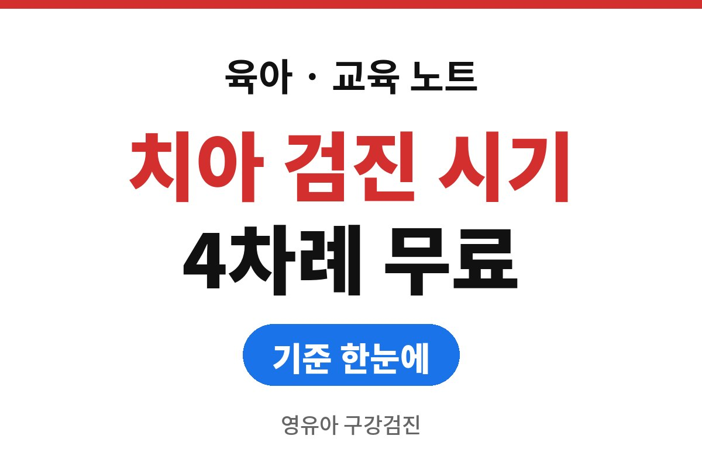
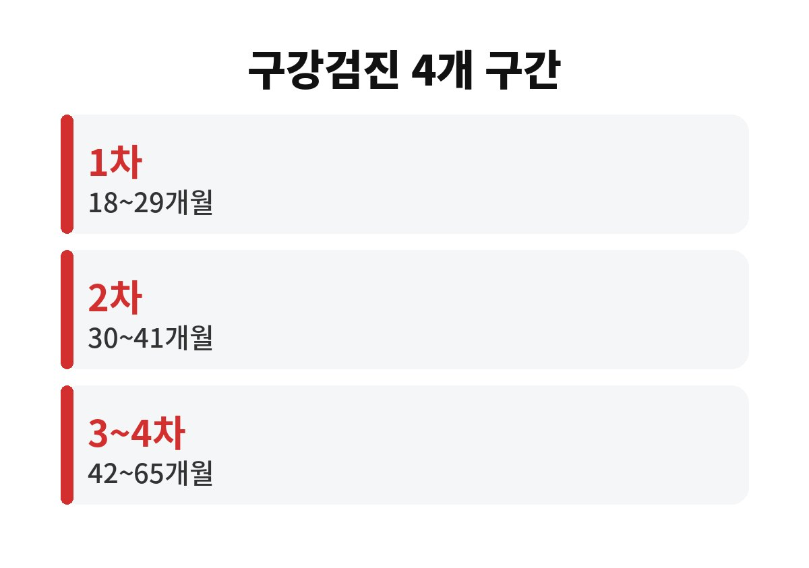
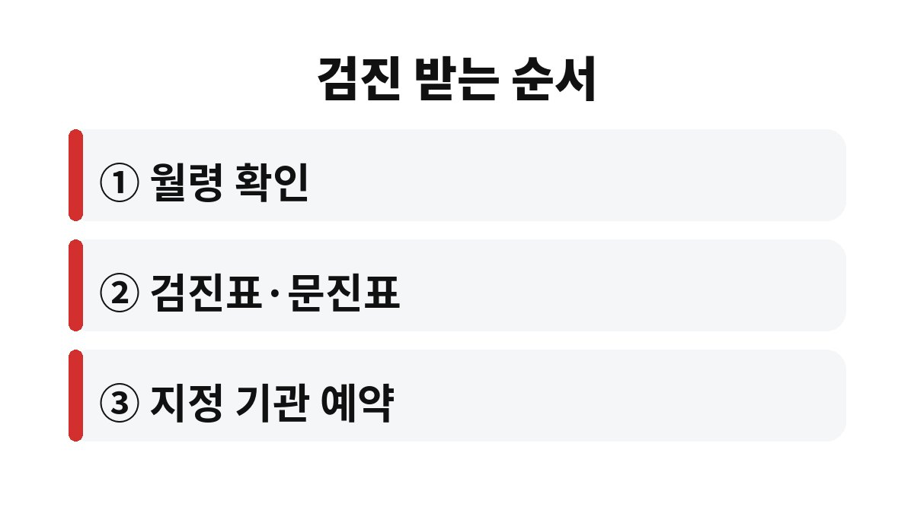

영유아 구강검진은 생후 18개월부터 65개월 사이 네 구간에서 기간 안에 받으면 본인부담금 없이 받을 수 있다.
구간은 18~29개월, 30~41개월, 42~53개월, 54~65개월이며, 2026년 11월 기준 국민건강보험공단 안내를 보도로 확인해 정리했다.
기간이 지나면 비용이 생기므로 아이 월령에서 구간이 끝나는 달을 먼저 계산해 두면 편하다.
대상은 6세 미만 영유아이고, 검진은 총 4차례로 나뉜다.
검진에서는 진찰과 상담, 치아 검사, 구강 보건교육을 받는다.
영유아 건강검진과 별개로 운영되기 때문에 소아과 검진을 다녀왔다고 구강검진까지 끝난 것은 아니다.
| 차수 | 아이 월령 | 비용 |
|---|---|---|
| 1차 | 18~29개월 | 기간 내 본인부담 없음 |
| 2차 | 30~41개월 | 기간 내 본인부담 없음 |
| 3차 | 42~53개월 | 기간 내 본인부담 없음 |
| 4차 | 54~65개월 | 기간 내 본인부담 없음 |

구간 안에서는 언제 받아도 같은 검진이므로 아이 컨디션이 좋은 날로 잡으면 된다.
다만 구간 마지막 달에 몰리면 예약이 밀릴 수 있어 나는 구간이 열리면 첫 달 안에 예약을 잡는 쪽을 권한다.
구간 이름이 차수와 월령으로 나뉘어 있어 처음에는 헷갈린다.
18개월이 되었다고 바로 2차로 넘어가는 것이 아니라, 18~29개월 열두 달 동안이 모두 1차다.
30개월 생일이 지나면 그때부터 2차가 열린다.
형제가 있다면 아이마다 월령이 다르니 각자 구간을 따로 센다.

검진표가 네이버 계정으로 간다는 점에서 헷갈리는 부모가 많다.
가구주 이름으로 계정이 따로 있다면 배우자 휴대전화에 알림이 갔을 수 있으니 한 번 물어본다.
예약 전화를 할 때는 영유아 구강검진을 받으려 한다고 말하고, 아이 월령과 검진표 확인 방법을 함께 묻는다.
병원마다 소아 진료 시간대가 다르고, 아이가 어리면 오전 이른 시간이 덜 보챈다는 이야기가 많다.
이는 공식 기준이 아니라 부모들 사이의 경험담이라 아이 낮잠 시간에 맞춰 정하면 된다.
아이가 두 돌을 막 지났는데 1차 구간을 놓친 사실을 30개월이 넘어서야 안 장면을 떠올려 본다.
1차는 지났지만 이미 2차 구간이 열려 있으므로 2차는 그대로 받으면 된다.
지난 구간은 비용이 생길 수 있어 다음 구간을 놓치지 않는 쪽이 낫다.
지정 기관과 휴일에 문을 여는 기관은 건강보험공단 누리집이나 모바일 앱 The건강보험에서 찾는다.
평일 낮에 시간이 안 나는 가정은 휴일 검진기관부터 확인하면 일정 잡기가 쉽다.
검진은 상태를 확인하고 상담하는 자리이며 치료와는 별개다.
치료가 필요하다는 안내를 받았다면 치과 진료로 따로 이어진다.
결과가 걱정되거나 아이가 이를 아파한다면 소아청소년과나 치과 전문가와 먼저 상담한다.
검진 당일 아이가 입을 열지 않아 걱정하는 부모도 있다.
치과에서는 어린아이가 우는 일에 익숙하므로 미리 칫솔로 입안을 보여 주는 놀이를 해 두면 낯섦이 줄어든다.
그래도 어렵다면 무리해서 달래기보다 기관에 사정을 말하고 방법을 상의한다.
지금 확인할 것은 하나다.
아이 생일에서 현재 월령을 세어 지금 열려 있는 구간이 몇 차인지 보고, 그 구간이 끝나는 달을 휴대전화 달력에 적어 둔다.
디지털 검진표를 못 받았다면 건강보험공단에 문의하는 편이 가장 빠르다.
다음 구간이 열리는 달도 함께 적어 두면 두 번째 알림을 따로 기다리지 않아도 된다.
참고 자료: 국민건강보험공단 「영유아 구강검진 안내」(보도로 확인, 2026년 11월 확인)
※ 2026년 기준 공식 자료를 바탕으로 정리한 일반 정보이며, 아이의 발달이나 건강에 걱정이 있다면 소아청소년과 등 전문가와 상담하길 바란다.